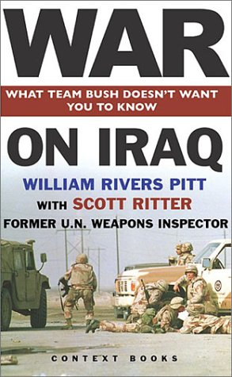

|

Iraq has been fundmentally disarmed
Scott Ritter, who spent seven years hunting and destroying Iraq's arsenal, tells William Rivers Pitt why he believes that Iraq's WMD capability has been eliminated.
- - - - - - - - - -
skreed.com
William Rivers Pitt: Does Iraq have weapons of mass destruction?
Scott Ritter: It's not black-and-white, as some in the Bush administration make it appear. There's no doubt that Iraq hasn't fully complied with its disarmament obligations as set forth by the UN Security Council in its resolution. But on the other hand, since 1998 Iraq has been fundamentally disarmed: 90-95% of Iraq's weapons of mass destruction capability has been verifiably eliminated. This includes all of the factories used to produce chemical, biological and nuclear weapons, and long-range ballistic missiles; the associated equipment of these factories; and the vast majority of the products coming out of these factories.
Iraq was supposed to turn everything over to the UN, which would supervise its destruction and removal. Iraq instead chose to destroy - unilaterally, without UN supervision - a great deal of this equipment. We were later able to verify this. But the problem is that this destruction took place without documentation, which means the question of verification gets messy very quickly.
WRP: Why did Iraq destroy the weapons instead of turning them over?
SR: In many cases, the Iraqis were trying to conceal the weapons' existence. And the unilateral destruction could have been a ruse to maintain a cache of weapons of mass destruction by claiming they had been destroyed.
It is important to not give Iraq the benefit of the doubt. Iraq has lied to the international community. It has lied to inspectors. There are many people who believe Iraq still seeks to retain the capability to produce these weapons.
That said, we have no evidence that Iraq retains either the capability or material. In fact, a considerable amount of evidence suggests Iraq doesn't retain the necessary material.
I believe the primary problem at this point is one of accounting. Iraq has destroyed 90 to 95% of its weapons of mass destruction. Okay. We have to remember that this missing 5 to 10% doesn't necessarily constitute a threat. It doesn't even constitute a weapons programme. It constitutes bits and pieces of a weapons programme which, in its totality, doesn't amount to much, but which is still prohibited. Likewise, just because we can't account for it, doesn't mean Iraq retains it. There is no evidence that Iraq retains this material. That is the quandary we are in. We can't give Iraq a clean bill of health, therefore we can't close the book on its weapons of mass destruction. But simultaneously we can't reasonably talk about Iraqi non-compliance as representing a de facto retention of a prohibited capability worthy of war.
How do we deal with this uncertainty? There are those who say that because there are no weapons inspectors in Iraq today, because Iraq has shown a proclivity to acquire these weapons in the past and use these weapons against their neighbours and their own people, and because Iraq has lied to weapons inspectors in the past, we have to assume the worst. Under this rubric, a pre-emptive strike is justified.
If this were argued in a court of law, the weight of evidence would go the other way. Iraq has, in fact, demonstrated over and over a willingness to cooperate with weapons inspectors. Mitigating circumstances surround the demise of inspections and the inconclusive or incomplete nature of the mission, by which I mean Iraq's failure to be certified as fully disarmed. Those seeking to implement these resolutions - for example, the United States - actually violated the terms of the resolutions by using their unique access to operate inside Iraq in a manner incompatible with Security Council resolutions, for example, by spying on Iraq.
Nuclear weapons
WRP: Five things generally draw the attention of the US government and the people interested in attacking Iraq. They are: 1) the potential for nuclear weapons; 2) the potential for chemical weapons; 3) the potential for biological weapons; 4) the potential for delivery systems that could reach the United States; and 5) possible connections between Saddam Hussein and Al Qaeda or other terrorist networks. I'd like to talk for a moment about Iraq's nuclear weapons programme.
SR: When I left Iraq in 1998, when the UN inspection programme ended, the infrastructure and facilities had been 100% eliminated. There's no debate about that. All of their instruments and facilities had been destroyed. The weapons design facility had been destroyed. The production equipment had been hunted down and destroyed. And we had in place means to monitor - both from vehicles and from the air - the gamma rays that accompany attempts to enrich uranium or plutonium. We never found anything. We can say unequivocally that the industrial infrastructure needed by Iraq to produce nuclear weapons had been eliminated.
Even this, however, is not simple, because Iraq still had thousands of scientists who had been dedicated to this nuclear weaponisation effort. The scientists were organised in a very specific manner, with different sub-elements focused on different technologies of interest. Even though the physical infrastructure had been eliminated, the Iraqis chose to retain the organisational structure of the scientists. This means that Iraq has thousands of nuclear scientists - along with their knowledge and expertise - still organised in the same manner as when Iraq had a nuclear weapons programme and its infrastructure. Those scientists are today involved in legitimate tasks. These jobs aren't illegal per se, but they do allow these scientists to work in fields similar to those in which they had worked where they were, in fact, carrying out a nuclear weapons programme.
There is concern, then, that the Iraqis might intend in the long run to re-establish or reconstitute a nuclear weapons programme. But this concern must be tempered by reality. That is not something that could happen overnight. For Iraq to reacquire nuclear weapons capability, they would have to build enrichment and weaponisation capabilities that would cost tens of billions of dollars. Nuclear weapons cannot be created in a basement or cave. They require modern industrial infrastructures that in turn require massive amounts of electricity and highly controlled technologies not readily available on the open market.
WRP: Like neutron reflectors, tampers...
SR: Iraq could design and build these itself. I'm talking more about flash cameras and the centrifuges needed to enrich uranium. There are also specific chemicals required. None of this can be done on the cheap. It's very expensive, and readily detectable.
The vice-president has been saying that Iraq might be two years away from building a nuclear bomb. Unless he knows something we don't, that's nonsense. And it doesn't appear that he does, because whenever you press the vice-president or other Bush administration officials on these claims, they fall back on testimony by Richard Butler, my former boss, an Australian diplomat, and Khidir Hamza, an Iraqi defector who claims to be Saddam's bomb-maker. And of course, that's not good enough, especially when we have the UN record of Iraqi disarmament from 1991 to 1998. That record is without dispute. It is well documented. We eliminated the nuclear programme, and for Iraq to have reconstituted it would require undertaking activities eminently detectable by intelligence services.
WRP: Because these claims by the Vice President are important to the debate, I want to be clear. Are you saying that Iraq could not hide, for example, gas centrifuge facilities, because of the energy the facilities would require and the heat they would emit?
SR: It is not just heat. Centrifuge facilities emit gamma radiation, as well as many other frequencies. It is detectable. Iraq could not get around this.
Chemical weapons
WRP: What about chemical weapons?
SR: Iraq manufactured three nerve agents: sarin, tabun, and VX. Some people who want war with Iraq describe 20,000 munitions filled with sarin and tabun nerve agents that could be used against Americans. The facts, however, don't support this. Sarin and tabun have a shelf-life of five years. Even if Iraq had somehow managed to hide this vast number of weapons from inspectors, what they are now storing is nothing more than useless, harmless goo.
Chemical weapons were produced in the Muthanna state establishment: a massive chemical weapons factory. It was bombed during the Gulf war, and then weapons inspectors came and completed the task of eliminating the facility. That means Iraq lost its sarin and tabun manufacturing base.
We destroyed thousands of tons of chemical agent. It is not as though we said, 'Oh we destroyed a factory, now we are going to wait for everything else to expire.' We had an incineration plant operating full-time for years, burning tons of the stuff every day. We went out and blew up bombs, missiles and warheads filled with this agent. We emptied Scud missile warheads filled with this agent. We hunted down this stuff and destroyed it.
WRP: Couldn't the Iraqis have hidden some?
SR: That's a very real possibility. The problem is that whatever they diverted would have had to have been produced in the Muthanna state establishment, which means that once we blew it up, the Iraqis no longer had the ability to produce new agent, and in five years the sarin and tabun would have degraded and become useless sludge. All this talk about Iraq having chemical weapons is no longer valid. Most of it is based on speculation that Iraq could have hidden some of these weapons from UN inspectors. I believe we did a good job of inspecting Iraq. Had they tried to hide it, we would have found it. But let's just say they did successfully hide some. So what? It's gone by now anyway. It's not even worth talking about.
WRP: Isn't VX gas a greater concern?
SR: VX is different, for a couple of reasons. First, unlike sarin and tabun, which the Iraqis admitted to, for the longest time the Iraqis denied they had a programme to manufacture VX. Only through the hard work of inspectors were we able to uncover the existence of the programme.
WRP: How did that happen?
SR: Inspectors went to the Muthanna State establishment and found the building the Iraqis had used for research and development. It had been bombed during the war, causing a giant concrete roof to collapse in on the lab. That was fortuitous, because it meant we essentially had a time capsule: lifting the roof and gaining access to the lab gave us a snapshot of Iraqi VX production on the day in January when the bomb hit. We sent in a team who behaved like forensic archaeologists. They lifted the roof - courageously, it was a very dangerous operation - went inside, and were able to grab papers and take samples that showed that Iraq did in fact have a VX research and development lab.
Caught in that first lie, the Iraqis said, 'We didn't declare the programme because it never went anywhere. We were never able to stabilise the VX.' Of course the inspectors didn't take their word for it, but pressed: 'How much precursor did you build?' Precursor chemicals are what you combine to make VX. 'How much VX did you make? Where did you dispose of it?' The Iraqis took the inspectors to a field where they'd dumped the chemicals. Inspectors took soil samples and indeed found degradation by-products of VX and its precursors.
Unfortunately, we didn't know whether they dumped all of it or held some behind. So we asked what containers they'd used. The Iraqis pointed to giant steel containers provided by the Soviet Union to ship fuel and other liquids, which the Iraqis had converted to hold VX. The inspectors attempted to do a swab on the inside of the containers and found they'd been bleached out: there was nothing there. But one inspector noticed a purge valve on the end of the containers. The inspection team took a swab and found stabilised VX.
We confronted the Iraqis with their second lie. They took a fallback position: 'OK, you're right, we did stabilise VX. But we didn't tell you about it because we never weaponised the VX. To us it's still not a weapons programme. We decided to eliminate it on our own. As you can see, we've blown it up. It's gone, so there's no need to talk about it.'
We caught them in that lie as well. We found stabilised VX in SCUD missiles demolished at the warhead destruction sites. The Iraqis had weaponised the VX, and lied to us about it.We knew the Iraqis wanted to build a full-scale VX nerve agent plant, and we had information that they had actually acquired equipment to do this. We hunted and hunted, and finally, in 1996, were able to track down 200 crates of glass-lined production equipment Iraq had procured specifically for a VX nerve agent factory. They had been hiding it from the inspectors. We destroyed it. With that, Iraq lost its ability to produce VX.
All of this highlights the complexity of these issues. We clearly still have an unresolved VX issue in Iraq. But when you step away from the emotion of the lie and look at the evidence, you see a destroyed research and development plant, destroyed precursors, destroyed agent, destroyed weapons and a destroyed factory.
That is pretty darned good. Even if Iraq had held on to stabilised VX agent, it is likely it would have degraded by today. Real questions exist as to whether Iraq perfected the stabilisation process. Even a minor deviation in the formula creates proteins that destroy the VX within months. The real question is: is there a VX nerve agent factory in Iraq today? Not on your life.
WRP: Could those facilities have been rebuilt?
SR: No weapons inspection team has set foot in Iraq since 1998. I think Iraq was technically capable of restarting its weapons manufacturing capabilities within six months of our departure. That leaves three-and-a-half years for Iraq to have manufactured and weaponised all the horrors the Bush administration claims as motivations for the attack. The important phrase here, however, is 'technically capable'. If no one were watching, Iraq could do this. But just as with the nuclear weapons programme, they would have to start from scratch, having been deprived of all equipment, facilities and research. They would have to procure the complicated tools and technology required through front companies. This would be detected. The manufacture of chemical weapons emits vented gases that would have been detected by now if they existed. We have been watching, via satellite and other means, and have seen none of this. If Iraq was producing weapons today, we would have definitive proof, plain and simple.
Biological weapons
WRP: What about biological weapons?
SR: If you listen to Richard Butler, biological weapons are a 'black hole' about which we know nothing. But a review of the record reveals we actually know quite a bit. We monitored more biological facilities than any other category, inspecting more than 1,000 sites and repeatedly monitoring several hundred. We found the same problem with biological weapons programmes that we found with VX: it took Iraq four years even to admit to having such a programme. They denied it from 1991 to 1995, finally admitting it that summer.
WRP: What did they try to make?
SR: They didn't just try. They actually made it, primarily anthrax in liquid bulk agent form. They also produced a significant quantity of liquid botulinum toxin. They were able to weaponise both of these, put them in warheads and bombs. They lied about this capability for some time. When they finally admitted it in 1995, we got to work on destroying the factories and equipment that produced it.
Contrary to popular mythology, there is no evidence that Iraq worked on smallpox, Ebola, or any other horrific nightmare weapons the media likes to talk about today.
The Al Hakum factory provides a case study of the difficulties we faced, and how we dealt with them. We had known of this plant since 1991, and had inspectors there who were very suspicious. Iraq declared it to be a single-cell protein manufacturing plant used to produce animal feed. That was ridiculous. No one produces animal feed that way. It would be the most expensive animal feed in the world. The place had high-quality fermentation and other processing units. We knew it was a weapons plant. The Iraqis denied it. Finally they admitted it, and we blew up the plant.
We theorised about the production rate of that plant, based on documentation about the growth media they'd used to nurture the anthrax. Iraq said it was for civilian use, but they had enough growth media to keep a civilian programme going for centuries, and growth media has a shelf life of five to seven years. This and other circumstantial evidence suggested Iraq had planned on producing a whole bunch of anthrax. The inspectors requested production log books, which the Iraqis said didn't exist. Next, the Iraqis said the plant didn't operate at full capacity. Then they said they had limited production runs. A lot of inspectors didn't believe them. I'm not in a position to judge.
Iraq was able to produce liquid bulk anthrax. That is without dispute. Liquid bulk anthrax, even under ideal storage conditions, germinates in three years, becoming useless. So, even if Iraq lied to us and held on to anthrax - and there's no evidence to substantiate this - it is pure theoretical speculation on the part of certain inspectors. Iraq has no biological weapons today, because both the anthrax and botulinum toxin are useless. For Iraq to have biological weapons today, they would have to reconstitute a biological manufacturing base. And again, biological research and development was one of the things most heavily inspected. We blanketed Iraq - every research and development facility, every university, every school, every hospital, every beer factory: anything with a potential fermentation capability was inspected - and we never found any evidence of ongoing research and development or retention.
Testing has at times been misused. One example has to do with Dick Spertzel, who headed up UN biological 'inspection in the latter part of UNSCOMs time in Iraq. He's a former biological warfare officer for the US Army, and played a role in US biological offensive weapons manufacturing. So he's very knowledgeable. He stated that the UN would not do biological weapons sampling. One of the most egregious cases concerns the Iraqi presidential palaces. We went in there in 1998, in the midst of very strong rhetoric by many in the administration, for example Secretary of Defence Cohen, who held up a bag of sugar and said if it was anthrax it could kill Washington DC. Many people were saying anthrax was being manufactured in Iraq's palaces. The world almost went to war to get us into them. Once we got in, we tested for nuclear and chemical weapons, and never found anything. But the biologists were prevented from conducting any tests. When the Iraqis confronted Dick Spertzel about this, he said he'd never expected biological weapons to be there, and hadn't wanted to give them the benefit of a negative reading.
WRP: It sounds like police detectives who refuse to put a search for a murder weapon in the search warrant, for fear of not being able to find it and then have to admit that into evidence.
SR: That's exactly what happened. It's ironic that Dick Spertzel has since complained that we have no 's potential for biological weapons a black hole. It's absurd. The Iraqis repeatedly asked him to bring in sophisticated sensing equipment to test for biological weapons. He consistently said he wasn't going to carry out investigations that provide circumstantial evidence to support Iraq's contention they don't have these weapons.
WRP: It was certainly in the best interests of the Iraqis to allow the inspectors, because if a negative came back, they could continue to build a case for getting rid of the sanctions.
SR: I find it intellectually and morally incomprehensible that Richard Butler allowed Dick Spertzel to operate in this manner. On a number of occasions I got in near-shouting matches with Dick Spertzel during morning staff meetings about the way he was carrying out his investigation. I said over and over that it was one of the most unprofessional investigations I've ever seen. But he was in charge of biology. My job was to look for concealment. And I never found any evidence of concealment of biological weapons.
There's another story I want to tell you about our investigations of biological weapons systems. In September 1997 Diane Seaman, biologist and investigator extraordinaire, did a no-notice inspection of the Iraqi national standards laboratory, where they do food testing. She went in the back way, and ran into two gentlemen with briefcases coming down the stairs. They panicked when they saw her, and tried to run away. She chased them down, grabbed them, and seized the briefcases. She handed the briefcases to one of her subordinates, told him to get it out of there, then held off the Iraqis while the guy escaped with the briefcases.
In our headquarters, we opened the briefcases and saw they contained documentation from their Special Security Organisation, Saddam's personal presidential security group. It's like the US Secret Service, but much more brutal. I'd been investigating them for a while. Earlier we'd gotten a very detailed report that the Special Security Organisation were using troops from Saddam's bodyguard unit to shuttle biological agent back and forth between certain facilities. When we investigated the report, we found it to accurately describe people and places. We took samples and never found any evidence of biological agent, but the SSO remained an organisation we were concerned about. Now we suddenly had in our possession a briefcase belonging to the SSO, taken from guys trying to sneak out of the building. Even more incredible, the document letterhead said Special Biological Activity.
We were thinking we'd hit a home run. We rapidly began to translate - and I mean rapidly - and saw things like 'botulinum toxin reagent test kits', and 'clostridium perfingen reagent test kits.' Both of these are agents developed by Iraq for weapons. We organised a meeting with the Iraqis, telling them we wanted to talk about this. The Iraqis refused, saying it had nothing to do with our work.
So we went to the headquarters of the Special Security Organisation, which happened to be right near the presidential palace. We were stopped at gunpoint, threatened, and forced to terminate the inspection. This led to a major confrontation. The world got ready for war. But then we started a detailed translation of the document and found it wasn't about biological weapons at all, but about testing food: these are reports of the samples that people take of every piece of clothing, every bed linen, every piece of food, anything that comes into contact with the president and his inner circle. They have botulinum toxin reagent because botulinum toxin is a food poisoning. Same with the clostridium perfingen. The whole document, the 'special biological activity', was about presidential security.
Truth matters little to how the story continues to be spun. This incident is still cited on national television and radio as an example of Iraq's continued work in biological weapons.
Just as with the nuclear and chemical weapons, there's a lot we don't know about Iraq's biological weapons capabilities. But there's also a lot we do. We know enough to say that as of December 1998 we had no evidence Iraq had retained biological weapons, nor that they were working on any. In fact, we had a lot of evidence to suggest Iraq was in compliance.
WRP: What about Iraq's delivery systems?
SR: Iraq is prohibited from having ballistic missiles with a range greater than 150 kilometres, but permitted to have missile systems with a lesser range. Iraq was working on two designs. One was a solid rocket motor design, and the other, the Al Samoud, uses liquid propulsion. The propulsion system for the Al Samoud is basically an engine that burns as long as you give it fuel. Fuel tank size determines range. Iraq was developing a propulsion system that could easily be modified by lengthening the fuel tanks or clustering missiles together to increase range. We monitored this project very closely, and found that the Iraqis have severe limitations on what they can produce within the country. Prior to the Gulf war, Iraq acquired a lot of technology, as well as parts, from Germany, which has a record of precision machinery. After the war, the Iraqis tried to replicate that, but with very little success. We watched them assemble their rockets, and because many of the members of our team were rocket scientists, we would notice their mistakes. They had to show us their designs and, of course, we didn't comment on them. But it quickly became apparent that the programme was run by intelligent, energetic amateurs who were just not getting it right. They would manufacture rockets that would spin and cartwheel, that would go north instead of south, that would blow up. Eventually they would figure it out. But as of 1998 they were, according to optimistic estimates, five years away, even if sanctions were lifted and Iraq gained access to necessary technologies.
I often hear people talk about Iraq having multi-staging rockets. But Iraq doesn't have multi-staging capability. They tried that once in 1989, when the country had full access to this technology, and the rocket blew up in midair. I hear people talk about clustering, but Iraq tried that, too, and it didn't work. Iraq doesn't have the capability to do long-range ballistic missiles. There's a lot of testing that has to take place, and this testing is all carried out outdoors. They can't avoid detection.
Of course, now the inspectors have left Iraq, we don't know what happens inside factories. But that doesn't really matter, since you have to bring rockets out and fire them on test stands. This is detectable. No one has detected any evidence of Iraq doing this. Iraq continues to declare its missile tests, normally around eight to 12 per year. Our radar detects the tests, we know what the characteristics are, and we know there's nothing to be worried about.

|